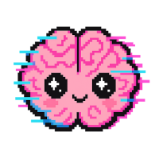
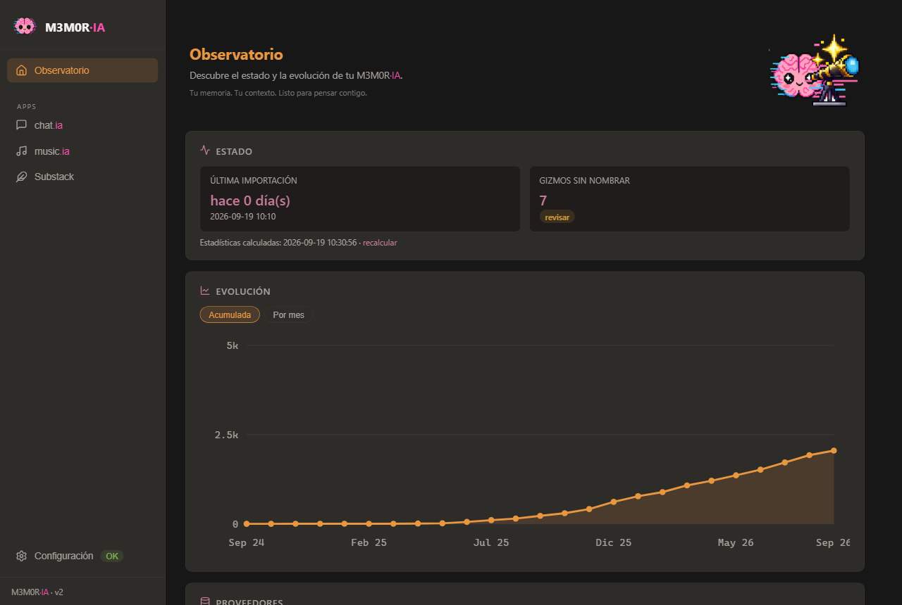
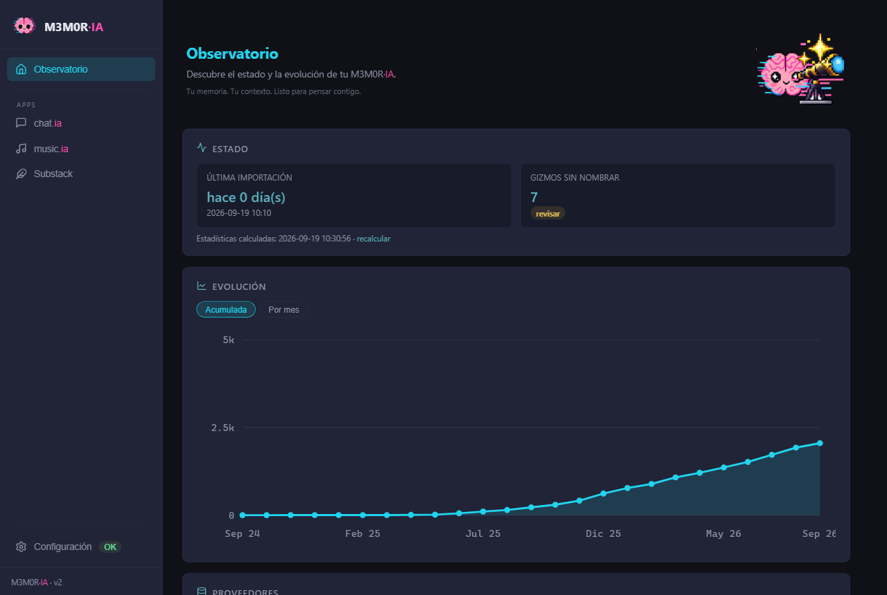
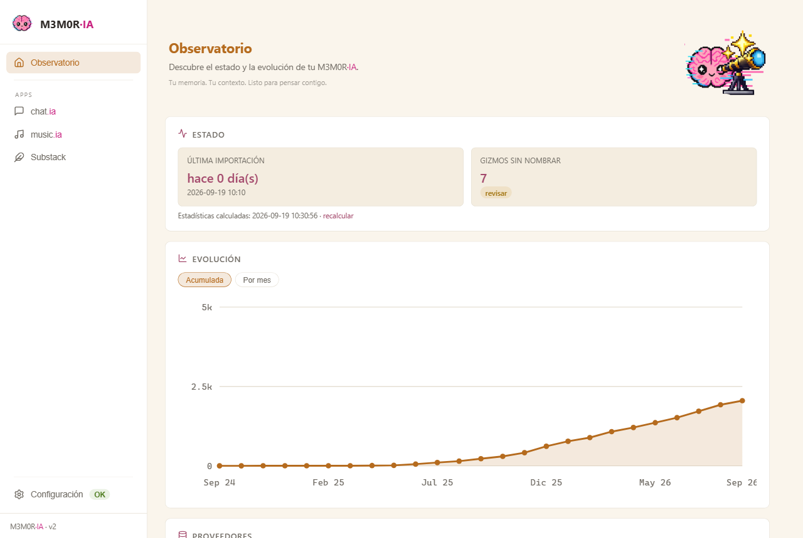

Vivimos confiando nuestra memoria digital a plataformas que no controlamos. Invertimos horas en dar forma a ideas, desmontar supuestos, investigar y construir modelos del mundo en forma de conversación.
Esos servidores no son nuestros: pueden cerrar, cambiar de dueño o dejar de guardarla. M3M0R·IA convierte los exports oficiales de esos servicios en un vault de Obsidian completamente local, organizado y navegable.
Descomprimes y haces doble clic. No hace falta saber programar ni instalar nada: lleva su propio Python dentro.
No es un conversor: es arqueología
Los exports oficiales dan HTML innavegable y JSON incomprensible. M3M0R·IA no traduce formatos: intenta entender cómo piensa cada proveedor para reconstruir la conversación entera — texto, imágenes, código, documentos y artefactos.
Los proveedores se reconocen por la estructura interna de su export, nunca
por el nombre del archivo. Las conversaciones duplicadas se fusionan sin
perder nada, y cada nota lleva provider y source
en su frontmatter: puedes filtrar por origen y recorrer un hilo de
pensamiento completo.
Un paseo por M3M0R·IA
- ObservatorioUn vistazo rápido al estado de tu memoria digital: cuándo fue el último export, cuánto ha crecido, qué proveedores viven ahí.
- chat.iaTus conversaciones. Verifica el export, construye el vault, cartografía los temas y reconecta lo que quedó suelto.
- music.iaTu música con historia. Suno y Flow Music, cada una con su propia captura, verificación y construcción.
- SubstackTu archivo editorial. Tintero distingue publicado, retirado y borrador.
- ConfiguraciónDonde se define dónde vivirá tu M3M0R·IA — con tres temas de color a elegir.
Tres temas, la misma casa
Warm por defecto, cool y claro. Se cambian desde Configuración → Apariencia y se aplican al instante.

warm 
cool 
claro
Tres herramientas en la misma casa
Con pipelines distintos a propósito: una conversación, un artículo y una canción no son la misma cosa, y tratarlas igual las estropea a las tres.
| Lo que tienes fuera | De dónde | A dónde llega |
|---|---|---|
| Tus conversaciones | ChatGPT · Claude · Grok | Un vault navegable en Obsidian, por proyecto y fecha, listo para servir de contexto a otro modelo vía MCP. |
| Lo que publicaste | Substack | Tintero — tu archivo editorial: distingue publicado, retirado y borrador. |
| Lo que compusiste | Suno · Flow Music | MUSIC·0LOGY — con el linaje entre versiones, covers y remezclas resuelto como enlaces. |
No hace falta usarlas todas. Cada una funciona por separado, y sin configuración no aparecen.
Cuando el formato cambia — cuidamos que no lo notes
En septiembre de 2026 Anthropic reemplazó el zip único del export de Claude por un manifiesto y cinco archivos separados, sin aviso previo. M3M0R·IA lo reconoce, no duplica las conversaciones que también estaban en un export anterior, y aprovecha lo nuevo que trae:
- La memoria persistente que Claude ha ido acumulando sobre ti — un vault aparte, con estructura propia, para no mezclarse con las conversaciones.
- El historial de versiones y comentarios de tus artifacts — el export viejo solo daba la última versión y perdía la conversación en el margen.
- El project knowledge que subiste inline a tus proyectos, con su system prompt y sus docs, sale a la vista.
Y las que no tienen export
Claude Code y Codex guardan tus sesiones en tu propia máquina, y esa
carpeta es efímera. No hay export oficial que pedir: si se
pierde, se perdió. M3M0R·IA copia el .jsonl crudo e
íntegro a su propio banco —es la única copia que va a existir— y genera
las notas a partir de ahí.
- La sesión entra en la cartografía, cruzada con tus temas como una conversación más.
- Los razonamientos y las salidas de herramientas se quedan fuera, en el banco: su vocabulario —git, rutas, comandos— contaminaría el mapa de temas.
- Idempotente: el banco deduplica por hash, así que reprocesar es seguro. La sesión en curso se omite, porque su captura sería parcial.
Es una herramienta hermana y se ejecuta a mano: el pipeline no la llama. Si no la lanzas, todo se comporta exactamente igual que antes.
El pacto
Nada se pierde.
Nunca se borra nada, los originales mandan sobre lo que se genera, y lo que la herramienta no sabe leer lo dice en voz alta en vez de inventárselo.
- Los datos no salen de tu máquina. Sin cuenta, sin nube, sin subir nada a ningún sitio.
- El historial completo, no solo las memorias guardadas: deduplicado, fusionado, con imágenes y adjuntos extraídos a sus propios bancos.
- Una memoria que sigue creciendo: se actualiza con exports nuevos sin rehacer lo anterior.
Antes de instalar nada
M3M0R·IA: mucho más que un extractor de conversaciones — el recorrido completo, módulo a módulo, con capturas.
Test de recuperación de extracto conversacional — una demostración redactada como informe clínico por una institución que estudia a los organismos biológicos y su incapacidad para encontrar sus propias conversaciones.